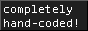
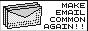
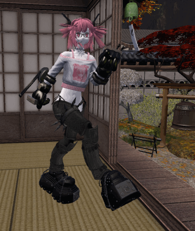
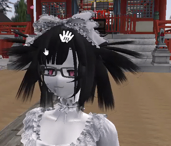

the webmaster
vietnamese artist residing in the states. nothing i can say about myself that hasn't already been written on this site.
my biggest dream is to spend my life living how 11-year-old me wanted to live.
vietnamese artist residing in the states. nothing i can say about myself that hasn't already been written on this site.
my biggest dream is to spend my life living how 11-year-old me wanted to live.




